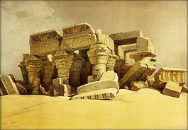

| |
|
Archives 2010
Actualités / blog des sites
|
23/12/2010
Rien de très particulier aujourd'hui sinon
que le Réseau ArtRéalité vous souhaite, amis lecteurs, de bonnes fêtes de
fin d'année.
Une brève annonce cependant : Dotapea
s'ouvrira prochainement à l'architecture par le biais de sa section
« Hi-tech ». C'est pour bientôt.
12/12/2010
mis à jour le 13
Courrier des lecteurs :
nouvelles entrées
*
Térébenthines sans
terpènes et essences d'agrumes
De l'intérêt discutable de térébenthines
sans terpènes.
Un sujet riche et très actuel.
*
Transparence : des
supports de grande dimension
Trouver un substitut au plexiglas pour un
support plus léger et plus grand n'est pas une évidence.
*
Jute : une enduction à
haut risque
Zoom sur la difficile question de
l'encollage de la toile de jute.
Mise à jour du 13 :
« la toile était
donc teinte »
*
Cire saponifiée et lait
de cire
De l'utilisation d'une cire saponifiée
"Beaux-arts" en décoration.
*
Charges modernes et
tradition
Silice colloïdale ou recettes anciennes :
a-t-on vraiment un choix ?
*
Sécurité : alerter
plus ? --> suite
Accidents, imprévision, manque
d'encadrement. La solitude nuit !
1/12/2010
Courrier des lecteurs :
beaucoup de lecture !
... avec pas moins de dix
nouveaux articles.
|
|
|
*
Totin : retour rétro sur
cette colle de peau
Ce que naïvement l'on aurait pu croire une
production artisanale était une industrie aux multiples applications.
|
|

|
*
l'Adragante et le papier
marbré
Un courrier de Smyrne nous instruit sur la
gomme adragante, son lien avec cette cité, et nous amène au passage à
introduire de nouveaux concepts dans le glossaire (mucilage, peptides). Ne
restons donc pas de marbre.
|
|
 |
*
Marouflage géant sur
bois
A partir de certaines dimensions, un
marouflage sur bois pose de réels problèmes, y compris environnementaux.
Nous sommes ici devant ce que l'on pourrait nommer un cas limite.
|
|
 |
*
Réserves : piste "Rubber
Cement"
A l'initiative d'une lectrice qui nous donne
une nouvelle piste, nous revenons sur le thème des réserves de grande
dimension et celui des solvants à latex et colles.
*
Marouflage délicat sur
bois
Retour sur les points délicats du
marouflage, notamment la chasse aux bulles et le poids du bois.
|
|
|
*
Bronzes : un intéressant
lien externe
Cette page écrite par un lecteur sculpteur
nous permet de découvrir la réalité de la pratique sculpturale, tournage
en fonderie inclus.
*
Sécurité : alerter
plus ?
Du lien entre métier, risque et société.
Réflexions éditoriales.
*
Bronze en pigment
pictural
Quel liant pour le bronze à peindre sur une
icône ?
*
Démaroufler un vieux
marouflage à la colle de peau
...ou quand un marouflage devient vraiment
très délicat.
|
|
|
*
Hide glue, évocation par
un facteur d'orgues
Une contribution sympathique et inattendue
qui ouvre différentes piste dans l'utilisation des colles animales. Point
d'orgue de cette série de publications.
|
|
 |
|
8/11/2010
Dialogues de Dotapea :
deux nouveaux chapitres
|
|
|
Chapitre XXIX :
LE FEU
De Yves Klein à Bill Viola, l'art
contemporain utilise le feu. Ne faisons donc pas l'impasse.
|
|
 |
Chapitre XXX :
La peau du métal
Nous aurions pu appeler ce chapitre "le
photon et le métal". C'est une mise au point importante sur différents
sujets abordés précédemment dans les Dialogues.
|
|
 |
Section « Hi-tech » :
Un nouveau cap franchi dans l'animation
holographique
Après une longue stagnation malgré une
véritable "bataille de l'hologramme en mouvement", une innovation importante
offre à l'holographie une première application animée d'une portée aussi
concrète que prometteuse.
Cliquer
ici.
31/10/2010
Courrier des Lecteurs
Les entrées récentes :
*
Appellation Coromandel
(laque)
Un appellation qui rend nécessaire un petit
détour par l'Inde des comptoirs européens et l'Inde antique.
*
Amidon : un encollage
discutable des supports
Une occasion de revenir sur la fermeture du
Musée National des Arts et Traditions Populaires.
*
Marouflage d'un papier
photo (incident)
Un incident de marouflage est assez pénible
car il peut impliquer un travail de récupération compliqué. La règle d'or
demeure de tester avec des échantillons afin de mettre au point un
processus qui devient ensuite banal.
18/10/2010
Courrier des Lecteurs
Les entrées récentes :
*
Tension des toiles,
gondolage
*
Gesso : conflit avec
les corps gras, utilisation du relief de la toile
*
Réserves : quels
produits pour des surfaces plus grandes ?
*
Eau osmosée : une "eau
Beaux-arts" ?
|
|
 |
|
13/10/2010
Une expérimentation
Aujourd'hui est le début d'un essai inédit. Il s'agit de
diffuser en régie (dans la marge grise à
droite) un visuel qui vous emmène non vers un site destiné à la vente de
matériel ou évoquant
une exposition, mais vers une "télé" YouTube contenant d'exceptionnels
documents vidéo sur Yves Klein, Soulages, Opalka, Buren, Rebeyrolles,
Dubuffet, Vlaminck, Bacon, Varini, Hantai, Nemours, Barrot, Volo, Balthus,
Swizgebel, Mathieu, Appel, etc., etc., etc., etc., etc......
Cette page hors de l'ordinaire est animée
par une société, Adam Montmartre, fournisseur de matériel Beaux-arts, mais
surtout - cela n'échappera à personne - par un passionné.
Les documents sont d'une réelle qualité et
c'est sans ambages ni détours que ArtRéalité conseille à ses chers
lecteurs de visiter ce petit trésor inattendu du web artistique
francophone.
Cliquer ici.
|
|
|
|
11/10/2010
No comment
Cliquer sur l'image (attention, présence de
pub possible).
|
|
|
|
30/9/2010
Deux nouveautés
importantes :
|
|
|
1. Un origami
miroir
C'est le titre du tout nouveau chapitre
XXVIII des Dialogues de Dotapea.
Ikaros, un voilier spatial japonais lancé
cette année, donne
une bonne occasion de revenir sur le thème de la réflexion de la lumière sans se priver de
multiples digressions : miroirs sans tain, liquides animés, cristaux
liquides, utilisation des ressources techniques dans les arts, etc.
Lien.
|
|
 |
2. La marche des gouttes
En section « Hi-tech », cet article est
consacré non à une invention précise mais à tout un domaine de recherches
très actif, la microfluidique, qui nous
invite à nous interroger sur des applications éventuelles dans le domaine
artistique.
A travers une vidéo (externe) et quelques
citations permettant de situer le sujet, nous découvrons qu'il existe de
nouveaux moyens d'animer des fluides.
Cliquer ici.
|
|
 |
|
28/9/2010
Le "no comment"
Cliquer sur l'image
Prochainement
Le chapitre XXVIII des Dialogues. On n'en
dit pas plus pour le moment.
20/9/2010
Nouveautés
Courrier des Lecteurs :
*
Vernis à bois détourné
*
Tripoli et verre trempé
*
Galets émaillés
* et du côté
pratique, Imprimer des
pages de Dotapea
...et une nouvelle entrée dans la section « hi-tech »
associée à la célébration en décembre du jubilée d'or du laser.
Cliquer ici.
|
|
 |
|
8/9/2010
Courrier des Lecteurs
Trois ajouts à nouveau :
*
Bio, toxicité et
peinture
*
Acrylique extra-fine
sur béton
*
Acrylique : détournement
de peintures déco
4/9/2010
Courrier des Lecteurs
Trois ajouts importants :
* Chaux cirée à
base de craie ou caséine-chaux ?
Lien.
* Pâte à
modeler transparente.
Lien.
* Titane rétif
au mouillage. Lien.
L'un d'eux évoque la possibilité d'un
concours. Nous ne sommes pas prêts mais on y pense...
Nouveau « no comment »
d'actualité

Cliquer sur l'image
26/8/2010
Refonte importante de
l'article consacré aux acides
Les non-métaux oxydés dits acides comme par
exemple (parmi tant d'autres) le SO4, responsable des fameuses
"pluies acides", sont-ils véritablement des acides alors qu'ils ne portent
pas le petit proton H+ que l'on a l'habitude de considérer comme
caractéristique de ces corps chimiques ?
Un questionnement loin d'être innocent quand
on sait que le tableau des éléments, c'est-à-dire la quasi totalité de
l'univers matériel, est coupé en deux par une distinction entre métaux et
non-métaux, les premiers étant alcalins lorsqu'ils sont associés à
l'oxygène, les seconds étant acides ou neutres dans la même association.
Retour également sur une autre question :
qu'appelle-t-on exactement acides forts et acides faibles ?
Quelques éléments de réponses dans cette
nouvelle mouture. Cliquer ici.
25/8/2010
Le coprin, un mystérieux
champignon encreur
|
|
|
|
Suite au questionnement d'une lectrice,
Dotapea lance un appel public afin d'obtenir des informations sur une
encre naturelle étonnamment méconnue. Mycologues, toxicologues, historiens
de l'art, archéologues, ethnologues et amateurs d'encres bienvenus.
Essayons donc de résoudre un mystère qui
concerne aussi, eh oui... le capitaine Haddock. Comme quoi un
divertissement inattendu ne nuit pas, même à des sujets aussi sérieux que
celui-ci.
Cliquer
ici ou sur l'image
ci-contre.
23/8/2010
Vivent les Roms et les
Manouches
No comment. Si : cliquer sur l'image.
20/8/2010
Essence de térébenthine et
nocivité
Un retour sur cette question dans le
Courrier des Lecteurs.
Cliquer ici.
17/8/2010
Dialogues, chapitre XXVII :
Ambre et histoires de
vieilles branches
Ce nouveau chapitre des Dialogues évoque une
légende des matériaux Beaux-arts, celle de l'ambre, trop utilisée sans
doute même de nos jours. Un prétexte ici pour un petit voyage parmi différents concepts
physiques.
C'est ici.
23/7/2010
Phases et liaisons
Signalons un ajout court mais de tout
premier plan dans l'article consacré aux phases de la matière. Ce texte
signé Jean-Louis éclaire le rôle
fondamental des liaisons - y compris mécaniques - dans ce qui distingue
les liquides, les gaz et les solides, c'est-à-dire notre univers
quotidien.
C'est
ici.
18/7/2010 [et ajouts
le 19 et le 21]
Nouveaux courriers
|
|
 |
*
Ambre : mauvaises informations.
Ce courrier devrait aboutir à la rédaction d'un complément sur l'ambre
d'ici quelque temps
*
Ovalit M et choix
d'une colle à maroufler
*
Huile à ses débuts :
Van Eyck et Lefranc. Lors des débuts du procédé à l'huile, on ne
distribuait pas les rôles des différents produits de la même manière
qu'aujourd'hui.
*
Gras sur maigre,
concept et application
*
Blanc de titane :
précisions
*
Médium de Langlais :
équivalent acryle
*
Métaux : les apprêts
*
Feutres, stylos : quelle
protection ?
*
Citations d'auteurs
*
Sources
*
Isorel : date de création
*
Pi et le carré
9/7/2010
Nouveautés dans le courrier des lecteurs
*
Sur la question de la documentation des
étudiants
*
Sur les vernis
acryliques
*
Rompre les couleurs,
sur une reproduction du Jardin des délices
*
Sur les repentirs trop
tardifs et le sens de l'opération du vernissage
24/6/2010
Travaux en cours
Pendant cette période silencieuse, nous
préparons un nouveau chapitre des Dialogues qui, continuant le chapitre
XXV dédié à la lumière, abordera le sujet plus vaste de l'énergie.
De nouvelles entrées du Courrier des Lecteurs seront publiées dans les prochains jours.
Par ailleurs la mise en ligne « en réel » du
projet Wal est maintenu sur 2010.
L'activité générale ne s'interrompra pas
durant l'été.
Enfin, rappelons ce que scande actuellement
l'une de nos campagnes en régie : nous recherchons un (second) développeur
Php.
Lien.
Amis lecteurs, merci de votre patience.
8/6/2010
Konrad Loder, nouvelle transcription d'une visite
d'atelier
Par écrit c'est différent, et on a ajouté
quelques éléments, mais la visite d'atelier vidéo réalisée pour Walesgal
2008 est maintenant disponible sous une autre forme sur ArtRéalité.com.
L'occasion de redécouvrir une approche
artistique pour nous tout à fait contemporaine et proche des
questionnements qui sont posés sur Dotapea.com.
Une référence à nos yeux.
Cliquer ici
6/5/2010
Renversez tout !
|
|
 |
|
Cela renverse tout : Ryan Hoagland a inventé
Winscape, la fenêtre qui peut faire d'une oeuvre un extérieur. Une
révolution qui n'est peut-être pas encore appréciée pour toutes ses
potentialités.
Cliquer ici
3/5/2010
L'avenir de l'aquarelle...
|
|
 |
|
... réside-t-il dans un vernis réellement
fiable qui a manqué pendant des millénaires, dès les premiers travaux des
peintres égyptiens ?
Réponse : sans doute, mais encore
faudrait-il que les fabricants contemporains de prometteurs "vernis pour
l'aquarelle" exposent avec sérieux des arguments qui pourraient nous en
convaincre. Pour le moment... mais n'en disons pas plus. Nous vous
laissons découvrir un nouveau "courrier des lecteurs" consacré à ce sujet.
Cliquer sur le tableau de David Roberts ci-dessous.

A découvrir également, le courrier d'un
lecteur qui pose d'intéressantes questions sur l'anticipation des
problèmes de dévernissage et l'emploi de la gomme dammar.
Cliquer ici
27/4/2010
Courrier : fin de
l'incident technique
Petit voyage sous le
capot
Chers lecteurs, la panne sans précédent qui
nous a empêché durant plus d'une semaine de recevoir vos courriels est
enfin résolue.
Il a été très difficile d'en identifier la
cause, puis de trouver le remède grâce à notre hébergeur qui, finalement,
a été victime des erreurs d'un sous-traitant. On ne citera pas de noms :)
car tout le monde a fait son travail et les technologies sont nettement
plus pointues ici que sur un hébergement classique.
Pour les initiés, il a fallu installer un
patch plutôt consistant sur un serveur dédié en distribution Gentoo par un
wget sous root par SSH. Pas si compliqué que cela mais moins simple que de
décrocher un téléphone pour se plaindre.
Les pannes demeurent cependant extrêmement
rares. Reconnaissons que celle-ci a compensé la rareté par l'ampleur. En
échange, les sites Dotapea et ArtRéalité sont d'un accès parfaitement
fluide et nous tenons à conserver nos solutions techniques, quitte a
mettre l'accent désormais sur la vigilance dans certains domaines, dans la
mesure où cette fluidité est l'une des clés du développement de nos futurs
nouveaux sites.
En vous remerciant de votre patience et en
réitérant nos excuses,
Emmanuel Luc,
éditeur
25/4/2010
Addendum sur le vernis
parfait
En écho à la mise à
jour du 16
|
|
 |
|
Un produit industriel est le plus souvent
protégé par un ou plusieurs brevets. Ce secret suscite des questionnements
naturels. Les voici en vrac et curieusement en prise avec l'actualité.
Un vernis fait de silice, même en couche
nanométrique, peut-il véritablement être hydrophobe, la comparaison avec
le polytétrafluoroéthylène (téflon, Téfal ®) évoquée sur le site du
fabricant est-elle valable, une substance peut-elle être « auto-phobe »,
qu'en est-il des relations extrêmes entre hydrogène et fluor à l'heure où
l'Eyjafjöll rejette autour de lui un fluorure d'hydrogène qui compte parmi
les produits les plus terriblement corrosifs ?
Un vrac ouvert, sans réponses définitives.
Cliquer ici
24/4/2010
ArtRéalité/Dotapea ne répond
plus - incident technique
Chers lecteurs, suite à de très complexes
problèmes techniques sur lesquels nous travaillons actuellement, nos
messageries ne reçoivent pas systématiquement vos courriers.
Nous vous demandons dans ce cas de prendre
patience et de réitérer vos envois dans quelques jours, après avoir
consulté ce blog qui signalera le retour à l'ordre dès qu'il aura lieu.
Nous vous remercions de bien vouloir
accepter nos excuses pour cet « incident indépendant de notre volonté »
pour reprendre une vieille formule.
16/4/2010
Le vernis parfait ?
|
|
 |
|
Obsession de générations d'artistes,
d'experts, de chercheurs, de commanditaires et d'acheteurs, le vernissage
parfait, neutre, durable, ni destructif ni intrusif, est-il aujourd'hui
possible grâce à une invention sensationnelle à base de silice ?
La question est réellement posée.
Eclairages sur cette nanotechnologie
séduisante dans un nouvel article de la section « Hi-tech ».
Cliquer ici
[lire aussi
l'addendum du 25]
4/4/2010
Profil de vos accès sur
Dotapea
Un chiffre qui surprend, mais un serveur web
ne sait pas mentir : plus de 80% de vos accès sont directs ! Moins de 20%
des visiteurs proviennent d'une recherche Google. Il y a cinq ans, c'était
le contraire. Depuis, alors que les autres moteurs disparaissaient
(aujourd'hui ils sont négligeables) et qu'une encyclopédie participative
bien connue obtenait la première place pour la majorité des requêtes,
l'audience de Dotapea a été multipliée par 7,8.
En conclusion, si le réseau ArtRéalité doit
beaucoup à Google pour ses débuts, il ne lui doit pas son développement ni
sa réussite actuelle. Il vous la doit à VOUS !
Merci à tous.
3/4/2010
Dotapea « hi-tech » - Nano-ciments et peintures autonettoyants :
quoi et comment ?
|
|
 |
|
A l'occasion de la publication d'un rapport
- assez ardu - de l'AFSSET (Agence française de sécurité sanitaire et du
travail), la presse généraliste a eu l'occasion d'évoquer la dangerosité
de ces produits. Partant de ce coup de projecteur, en marchant à rebours,
journalistes et public ont pu obtenir quelques informations sur lesdits
produits, connus seulement jusque là d'un nombre restreint de
professionnels. Voici donc l'occasion d'évoquer dans la section
« Hi-tech » de Dotapea ces ciments et peintures aux propriétés
fantastiques.
Lien
29/3/2010
Précisions sur la liaison hydrogène
(ajouts importants le 30 :
l'encadré "Vue d'ensemble et précisions" et un schéma inédit)
|
|
|
|
A peine évoqué sur ce site, ce phénomène
quasiment inconnu du grand public est l'objet d'un tout nouveau
développement de l'article consacré aux liaisons entre atomes.
C'était le moins que l'on puisse faire pour
cette liaison (et l'atome qui l'emmène) dans la mesure où elle est vitale
au sens propre, c'est-à-dire indispensable à la vie, et permet de fournir
quelques réponses à la question "qu'est-ce que l'eau" ?
"Chapitre ouvert", ce petit texte amènera
sans doute des développements.
Lien
26/3/2010
Phosphorescence alimentaire
et retour sur la photoluminescence
|
|
|
|
On ne mange pas des lanthanides mais on peut
peut-être boire du plancton photoluminescent.
Voici un nouvel article du courrier des
lecteurs sur un sujet qui ne cesse de fasciner. C'est l'occasion d'en
explorer certains aspects inattendus. Qui eut cru par exemple que ces
phénomènes sont en partie expliqués par la seule physique quantique ? Ou
bien qu'une démarche artistique s'appuyant sur eux pourrait impliquer un
travail avec le vivant ?
Lien
5/3/2010
Nouveau bleu de manganèse :
interview exclusive de l'inventeur sur Dotapea.com
Le "bleu Mn-YIn" nous laissait sur notre
faim car les informations disponibles étaient assez incomplètes. Alors
Dotapea est allé en chercher d'autres directement auprès de son créateur,
le chercheur américain Mas Subramanian...
Lien
4/3/2010
Khôl : les vertus protectrices inattendues du plomb
La publication d'un travail de recherches
interdisciplinaires dirigées par Philippe Walter, médaille d'argent 2009
du CNRS, pose de troublantes questions sur les vertus pharmacologique
jusque là insoupçonnées d'un usage parcimonieux du plomb dans l'Antiquité.
Lien
25/2/2010
WAL - annonce
La seconde vague de chemins de fer devrait
voir le jour courant mars-avril avec six à huit nouveaux chemins et une
intégration php plus évoluée pour le visiteur comme pour l'auteur.
Quelques noms en ordre alphabétique :
* Anne Clerget
* Aurélien
Bidaud (Biztek)
* Jean-Pierre
Brazs
* Frédérique
Charbonneau
* Claude Yvans
avec des interviews originales de
* Christian
Boltanski
* Daniel Buren
* Gérard
Fromanger
* Peter
Stämpfli
* quelques
autres grands artistes, à l'occasion du soixantenaire de Jeune
Peinture/Jeune Création.
* et le Audrey
Express dont on vous laisse la surprise.
Ces publications seront annoncées au fur et
à mesure sur ce blog et sur le fil RSS de ArtRéalité.com.
|
|
 |
|
27/1/2010
WAL
Feuilleter un site web comme un magazine,
c'est l'idée.
Un magazine tout sauf banal puisque c'est
une nouvelle structure de site internet.
A découvrir ici.
Peu de contenu encore mais cela ne durera
pas. En attendant que pensez-vous des premiers pas de ce nouveau bébé, de
ce nouveau concept ?
N'hésitez pas à nous écrire pour nous donner
votre opinion. Cliquer ici.
20/1/2010
Berlue et Wal
L'Italie se distingue en ce mois de janvier
par le « décret Romani » qui assimile toute publication web à une
diffusion télévisuelle ou radiophonique soumise à une autorisation
ministérielle préalable. Comme le souligne le député démocrate Vincenzo
Vita, « l'Italie rejoint le club des censeurs aux côtés de la Chine, de
l'Iran et de la Corée du Nord ».
On peut à ce sujet rappeler une directive
européenne qui stipule que « aucune disposition [...] ne devrait obliger
ou encourager les États membres à imposer de nouveaux systèmes d'octroi de
licences ou d'autorisations administratives pour aucun type de service de
médias audiovisuels. »
Cette décision qui ne concerne que le web
italien tombe à quelques jours de la mise en ligne de WAL, le nouvel outil
de communication du réseau ArtRéalité. Aux alentours du 22 ou du 24 vous
pourrez en effet découvrir un nouvel objet internet particulièrement
ouvert au multimédia.
1/1/2010
Bonne année 2010 :)
Elle commence par une bonne nouvelle puisque
même les politiques français (pour ainsi dire tous) ont prix au sérieux
l'Internet en y diffusant leurs voeux en vidéo. Une marque d'intérêt et
une première prometteuse qui nous fera oublier, espérons-le, une année
2009 catastrophique pour le web artistique francophone avec une série de
fermetures de sites tout à fait sérieux (lire
l'éditorial du
Portail presse). En revanche, on peut signaler un intérêt inédit des
entreprises (à l'instar des politiques) pour nos moyens de communication.
Pour que cela se traduise en faits,
c'est-à-dire en développement et en qualité de contenus, il nous reste
encore beaucoup de travail afin d'installer une désintermédiation efficace
reposant sur des solutions innovantes. C'est notre axe éditorial pour
cette nouvelle année.
Au programme de 2010, donc, sur le Réseau
ArtRéalité, annonçons la mise en ligne dès le 15 d'un important projet
audiovisuel. Pas un mot de plus, nous vous laissons la surprise et en
attendant nous vous souhaitons une année frimoussante, une année où le web
sourit :)
|
|
 |
Retour
début de page
|
|

 Communication
Communication
|
|